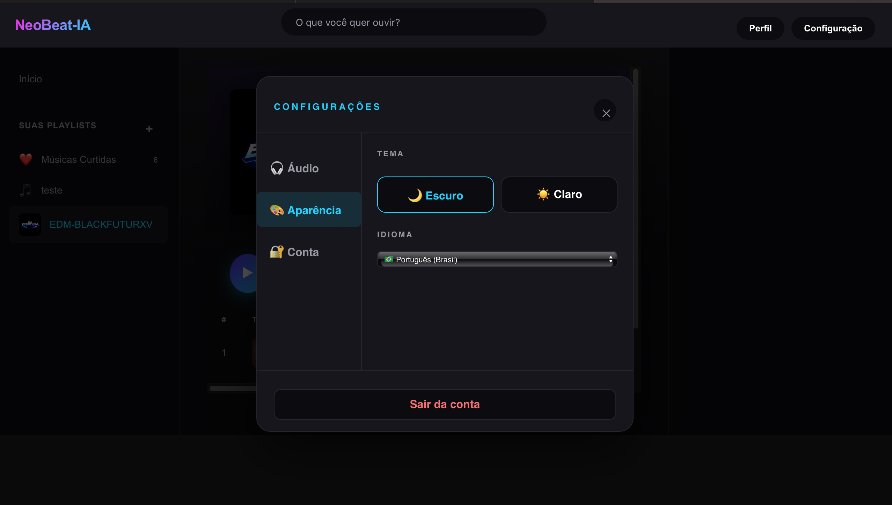
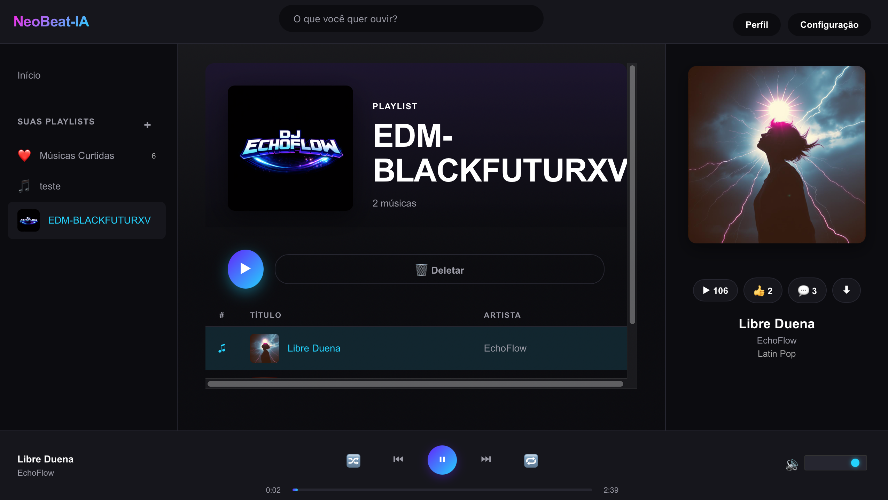
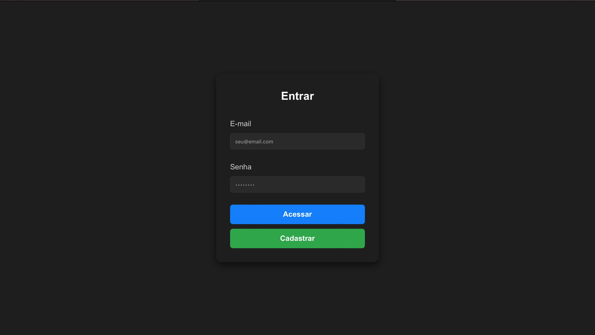
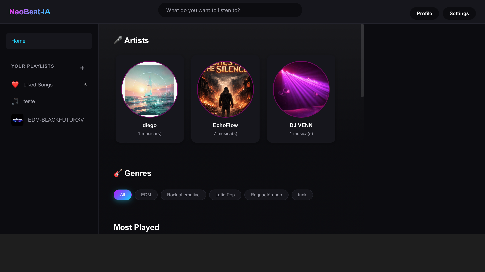

NeoBeat-IA
Plataforma de música construída com React e TypeScript no front-end, com back-end em Node.js e Supabase cuidando de autenticação, login de usuários e armazenamento de músicas e imagens.
Sobre o projeto
O NeoBeat-IA é uma aplicação de música desenvolvida com React e TypeScript no front-end, com um back-end em Node.js responsável pelas regras de negócio. O Supabase é usado como banco de dados e serviço de autenticação, cuidando do cadastro e login de usuários, além do armazenamento de músicas e imagens da plataforma.
Stack utilizada
- Frontend React, TypeScript
- Backend Node.js
- Dados Supabase
- Autenticação Login de usuários via Supabase
- Armazenamento Músicas e imagens via Supabase
Telas do projeto
Clique em uma imagem para ampliar.





Código-fonte completo
Veja a estrutura do projeto, instalação e detalhes no repositório.
Dúvidas sobre este projeto?
Entre em contato comigo pelas redes abaixo.